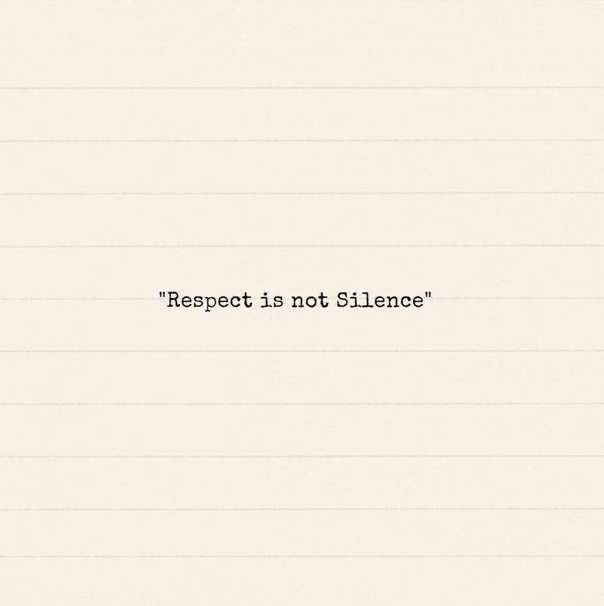
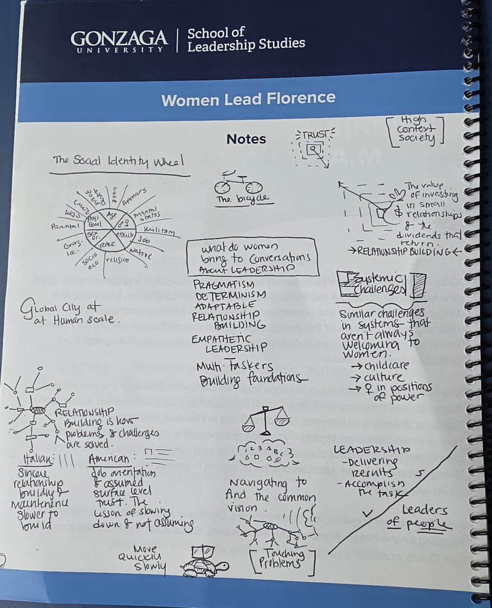
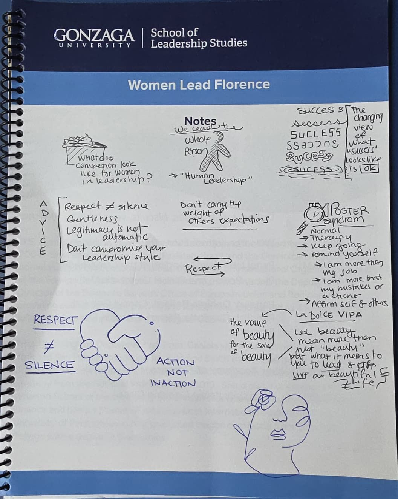
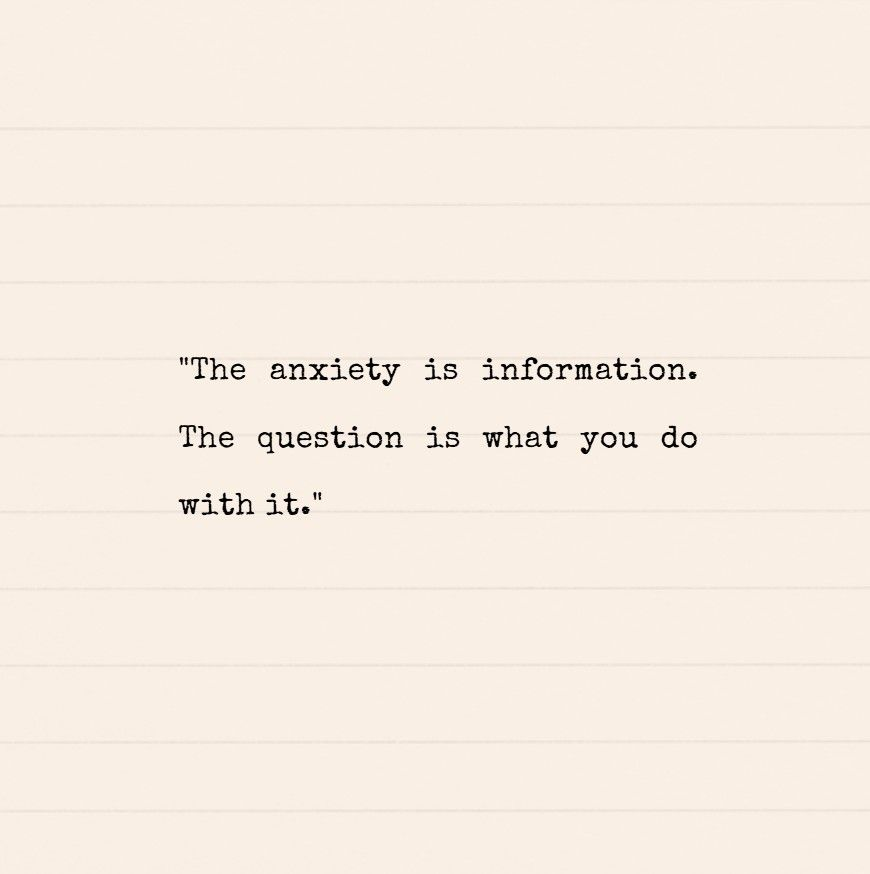
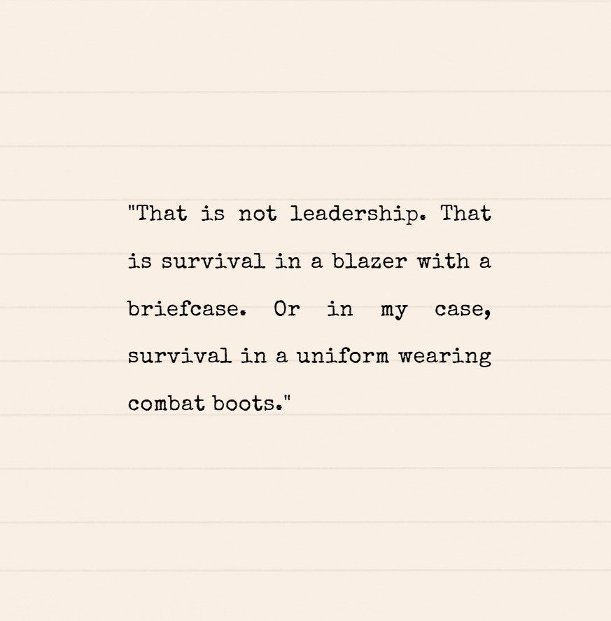
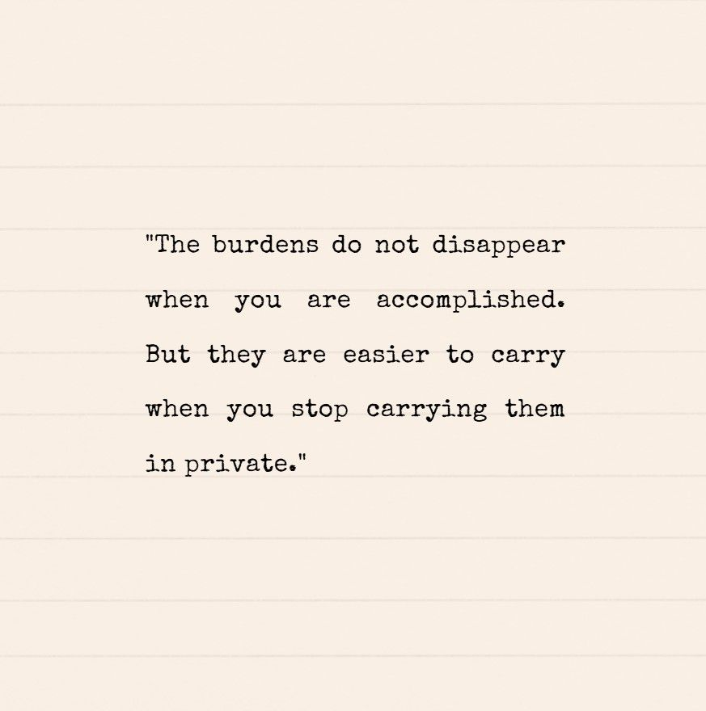

Journey 06 · Firenze Note 4 of 11 Field Note
Respect Is Not Silence
Field notes from Florence on leadership, voice, legitimacy, and style.

I wrote respect ≠ silence in my notebook with a little more force than the rest of my notes.

It came from a panel conversation during the Women Lead conference in Florence. I am not going to name who said what, because the room had agreed to a level of trust that allowed people to speak more honestly than they might have otherwise. That agreement matters to me. Some conversations are worth sharing because of what they opened up, but not every insight needs to be carried back into public with a person’s name attached to it.
So, this is not a transcript. It is my attempt to think through the questions the panel opened.
The session brought together women who had led in very different worlds, across different countries, institutions, and professional expectations. They had formal accomplishments, of course. Titles, experience, recognition, authority earned over time. But the room did not linger in the language of achievement for very long.
What surprised me was how quickly the conversation turned toward something I recognized from the inside. In a room full of accomplished women with long careers and real authority, the questions being asked were echoes of things I have sat with myself: about how I lead, how I am seen, and how I am in the middle of redefining myself both professionally and personally. It was more useful than what I expected.
How do you lead when your legitimacy is not assumed? How do you remain respectful without making yourself smaller? How do you hold authority without performing someone else’s version of what authority is supposed to look like?
Those questions have a different weight when they are asked in a room full of women who have actually been in those situations, repeatedly, at high levels.
There are expectations that follow women into leadership spaces whether anyone names them or not. Be confident, but not arrogant. Be direct, but not harsh. Be warm, but not unserious. Be capable, but not threatening. Be collaborative, but still somehow singularly responsible when something goes wrong. There is a significant amount of emotional labor hidden inside the word professional, and the panel did not pretend otherwise.
Leadership does not happen in a neutral room. It happens inside cultures, institutions, histories, and bodies. It happens while people are deciding whether they believe you belong there. It happens while you are deciding how much of yourself to bring forward and how much you have been trained to hold back.
Which is why that phrase stayed with me the way it did:

Respect is not silence.
Respect and disappearance are not the same thing, even though they get confused for each other constantly. You can challenge something and remain respectful. You can name a problem at its actual size. You can decline to carry everyone else’s comfort as your primary professional responsibility. Be respectful can really mean be careful, do not make anyone uncomfortable, speak later, soften it, smile more, wait your turn, absorb the tension. And those instructions have a way of accumulating until the space you are taking up has become very small indeed.
Speaking clearly is not disrespectful. Disagreeing is not disrespectful. Refusing a frame, naming an expectation, holding your ground on something that matters… none of that requires becoming harsh or cruel or difficult. It just requires accepting that managing everyone else’s comfort is not actually part of your job description, even when it has been treated that way.
That is simple enough to write. It is considerably harder to practice in rooms where the expectation is already set before you walk in.

The harder piece the panel named was legitimacy. Some people walk into a room and are assumed to belong there. Others have to prove it, and then prove it again, and then prove it once more after that, in a different room with a different audience who did not get the memo from the last room. That repeated proving takes energy that doesn’t show up anywhere on a job description but you have to keep spending anyway.
It makes you hyper-aware of things that should not require that much attention. Tone. Posture. Timing. How much space you are taking up. Whether you spoke too soon or too late. Whether that silence was read as confidence or uncertainty. And underneath all of that, a pressure: the feeling that you are not just representing yourself. You are not just yourself in the room. You are a woman leader. And as a woman leader you are somehow also carrying every woman who came before you into this space and every woman who might come after you. Every mistake you make is not just yours. Every success has to work harder to be seen as yours alone. The margin for error has never felt equal, because the stakes have never been equal.
The standard advice on impostor syndrome tends to treat it as a confidence problem with a confidence solution: believe in yourself harder, take up more space, fake it until it’s real. What I heard that morning was something different. Sometimes the feeling of not belonging comes from the room itself, not from a failure of self-belief. The anxiety is the information: the question is what you do with it.
What came out of that conversation was less about fixing the feeling and more about not letting it drive. Keep going. Build evidence over time. Return to the work. Learn from mistakes without becoming them. Let other people affirm you when you cannot quite affirm yourself. Get support when you need it. Refuse to turn one bad moment into a verdict on your whole capacity.

There was also something said about not compromising your leadership style so completely that you become unrecognizable to yourself.
Adaptability is real and necessary. Different rooms ask for different kinds of presence, and learning to read a room is part of the work. But adaptation and erasure are not the same thing. There is a version of adaptability that is actually just accommodation, where you sand yourself down until no one can object to you. And that is not leadership: it’s survival in a blazer with a briefcase.
Or in my case, it’s survival in a uniform wearing combat boots.
The better questions to ask are how to become more skillful without becoming less yourself and how to listen without surrendering your judgment. How to be gentle without going silent. How to lead in a way people can trust because it is grounded, not because it is carefully managed to avoid friction.
The conversation did not resolve these questions, and I don’t think it was trying to. It was more like a room full of people agreeing to put a name to the actual terrain, which is its own kind of relief. And sometimes the most clarifying thing is realizing that the weight you assumed was yours alone has been sitting on a lot of other shoulders too, including shoulders belonging to women with titles and track records and rooms full of people listening to them.

Mentioned in
Originally published at fieldnotesfromabroad.com/2026/05/19/respect-is-not-silence/